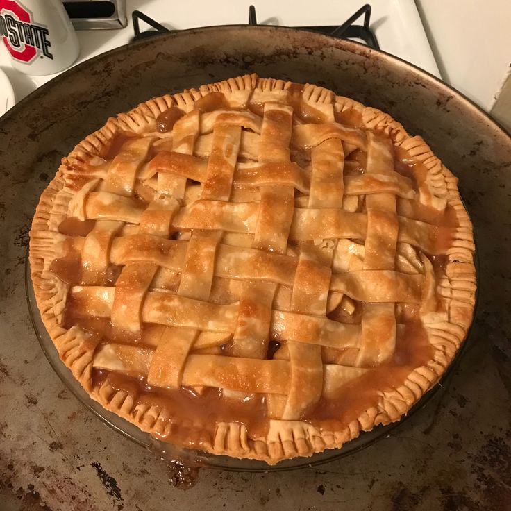

APPLE PIE

INGREDIENTS
8 small apples, or as needed
½ cup unsalted butter
3 tablespoons all-purpose flour
½ cup white sugar
½ cup packed brown sugar
¼ cup water
1 (9 inch) double-crust pie pastry, thawed
INSTRUCTIONS
-
Gather the ingredients. Preheat the oven to 425 degrees F (220 degrees C). Peel and core apples, then thinly slice. Set aside.
-
Melt butter in a saucepan over medium heat. Add flour and stir to form a paste; cook until fragrant, about 1 to 2 minutes. Add both sugars and water; bring to a boil. Reduce the heat to low and simmer for 3 to 5 minutes. Remove from the heat.
-
Press one pastry into the bottom and up the sides of a 9-inch pie pan. Roll out remaining pastry so it will overhang the pie by about 1/2 inch. Cut pastry into eight 1-inch strips.
-
Place sliced apples into the bottom crust, forming a slight mound. Lay four pastry strips vertically and evenly spaced over apples, using longer strips in the center and shorter strips at the edges.
-
Make a lattice crust: Fold the first and third strips all the way back so they're almost falling off the pie. Lay one of the unused strips perpendicularly over the second and fourth strips, then unfold the first and third strips back into their original position.
-
Fold the second and fourth vertical strips back. Lay one of the three unused strips perpendicularly over top. Unfold the second and fourth strips back into their original position. Repeat Steps 6 and 7 to weave in the last two strips of pastry. Fold and trim excess dough at the edges as necessary, and pinch to secure.
-
Slowly and gently pour sugar-butter mixture over lattice crust, making sure it seeps over sliced apples. Brush some onto lattice, but make sure it doesn't run off the sides.
-
Bake in the preheated oven for 15 minutes. Reduce the temperature to 350 degrees F (175 degrees C) and continue baking until apples are soft, 35 to 45 minutes.
-
Serve and enjoy!